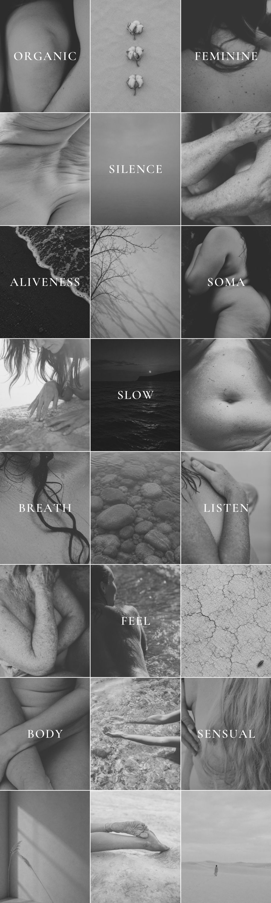

Hi Maanee. This is the Instagram grid we built from your words. Tap Approve on each post you like. If something is not right, tap Change and tell us what you would like instead.

11 posts carry one of your words from your own grid. The other 13 are photos. Each post has a short caption made only of sentences from your pages.
When you are done, press Send on WhatsApp or Email to Eric, or Copy verdict to paste it anywhere.